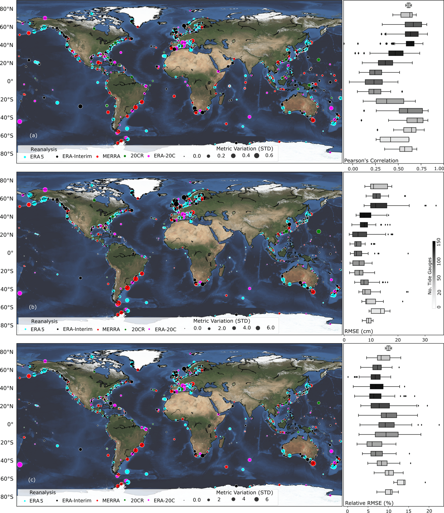
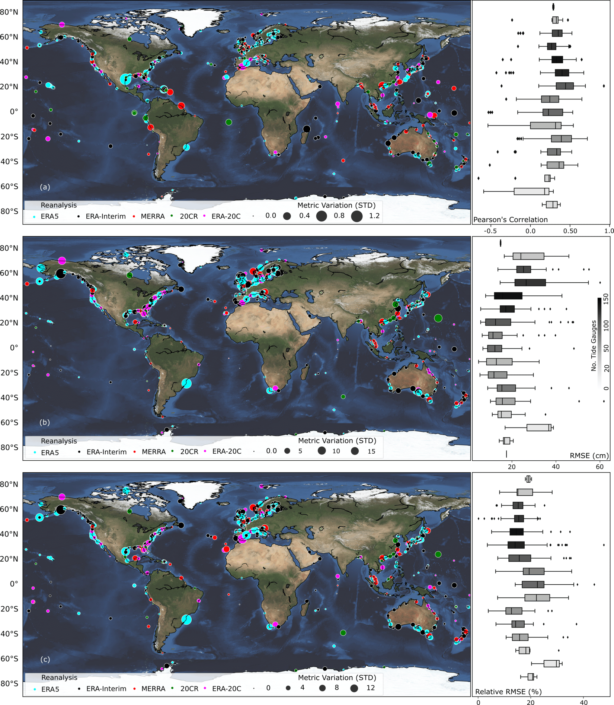
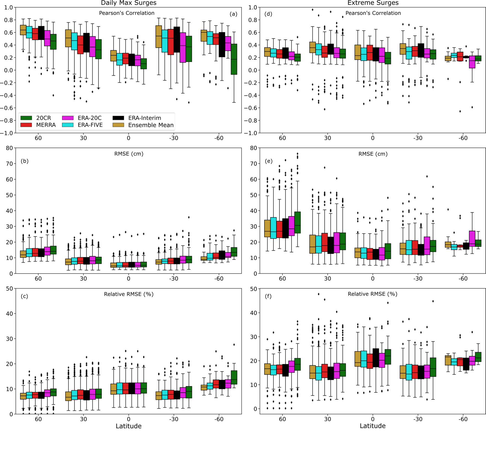

1. Background
We validate the surge reconstructions for the different reanalysis products and individual tide gauges using a 10-fold cross-validation. As the five reanalysis products have different start and end times, the validation periods (or fold sizes) for which the performance metrics are derived are also different (surge reconstructions derived with the longer-term reanalyses have longer validation periods). The validation results are provided in the metadata section of the corresponding surge reconstruction (refer Table 2 for the respective DOIs).



